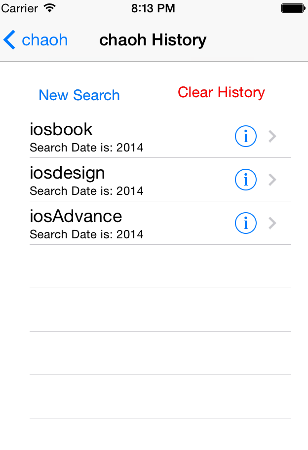
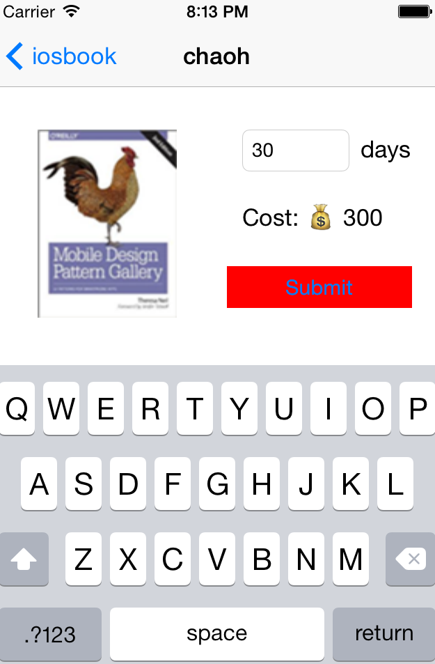

In this project I plan to design a tool to provide a platform for stduents to exchange their books.
Here is the Doxygen page In this project, I try to combine internal database and external database together. The external database includes the following table: Users, Books and Borrow. The borrow table control the action between Books and Users. The detail can be seen in the database schema. The main function of external database is managing all the users and books. The internal database includes the following table: localUser, localBook and History. The main function of internal database is trying to remember the users’ search action. Here we call it history. As you can see from the name of the table, the internal database just conclude the users which use this iPhone. Also, it will remember the record the books which have already searched by local users. The connection between these two databases is: the internal database is concluded by external database which means the users belong to internal database must belong to the external database. The vise is not. The main function of this application is:|  |  |